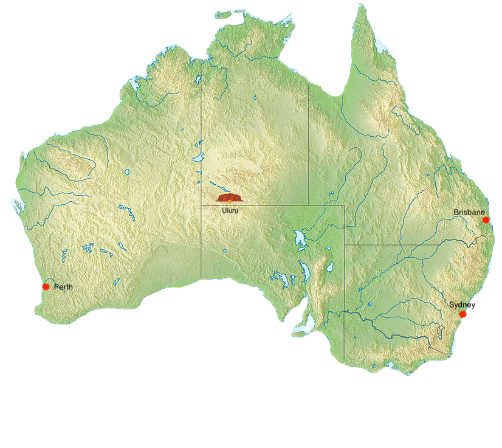

Hvor vil du dra?


Western Australia -
The Wildflower State
- Størrlese: 2,529,875km², noe som tilsvarer 32,87% av Australia og er Australias største delstat.
- Popilasjon: 2,1 millioner, 1,6 millioner bor i hovedstaden.
- Hovedstad: Perth
- Fun fact: Visste du at Vest Australia har 4 rosa innsjøer?
Northern Territory -
The Territory
- Størrelse: 1,346,200 km², 15.52% av Australia og er den 3. største staten.
- Populasjon: 215.000, 115,000 bor i hovedstaden.
- Hovedstad: Darwin.
- Fun fact: Visste du at i stedet for hester, konkurrerer de ved å ri på kameler?
Queensland -
The Sunshine State
- Størrelse: 1,727,200 km², det er 22,5% av Australia og er den nest største delstaten.
- Populasjon: 5,185 millioner, 2,28 millioner bor i hovedstaden.
- Hovedstad: Brisbane
- Fun fact: Visste du at Queensland har mer enn 200 nasjonalparker? Vi anbefaler Daintree Rainforest!
South Australia -
The Festival State
- Størrelse: 984,000 km², det tilsvarer 12.8% av Australia, eller 4 største delstat
- Populasjon: 1,6 millioner, mer en 1.1 millioner lever i hovedstaden.
- Hovedstad: Adelaide
- Fun fact: Visste du at Adelaide også blir kalt "The City of Churches" på grunn av byens mange kirker?
New South Wales -
The Premier State
- Størrelse: 801,428 km², det er 10.4% av Australia, eller 5. største delstaten.
- Populasjon: 6.8 millioner, 4,2 millioner lever i Sydney.
- Hovedstad: Sydney
- Fun fact: Visste du at når New South Wales ble grunnlagt i 1788, besto staten av over halvparten av Australia sitt landområde?
Victoria -
The Garden State
- Størrelse: 227,600 km², det tilsvare bare 2.96% av Australia og er den 6. støsrte delstaten.
- Populasjon: 5,2 millioner, 3,8 millioner bor i hovedstaden
- Hovedstad: Melbourne
- Fun fact: Visste du at du kan stå på ski i Victoria?
Tasmania -
The Apple Isle
- Størrelse: 68,330 km², bare 0,88% av Australia og er den minste delstaten
- Populasjon: 493,300. 206.000 bor i hovedstaden
- Hovedstad: Hobart
- Fun fact: Visste du at Tasmania har den reneste luften i verden?